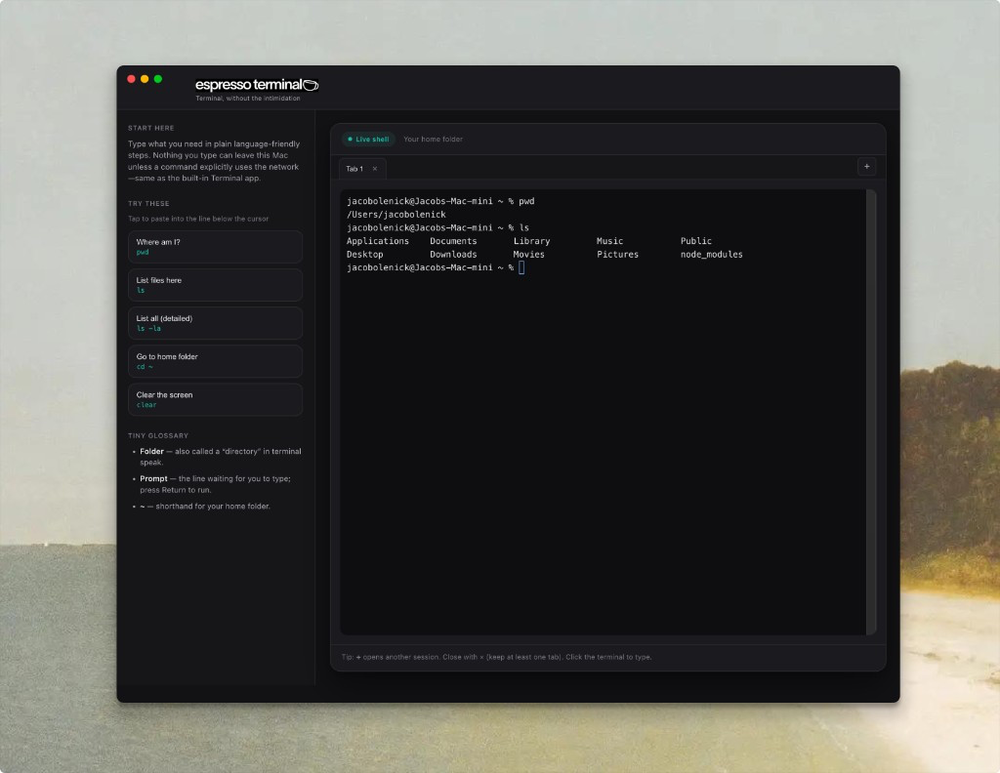
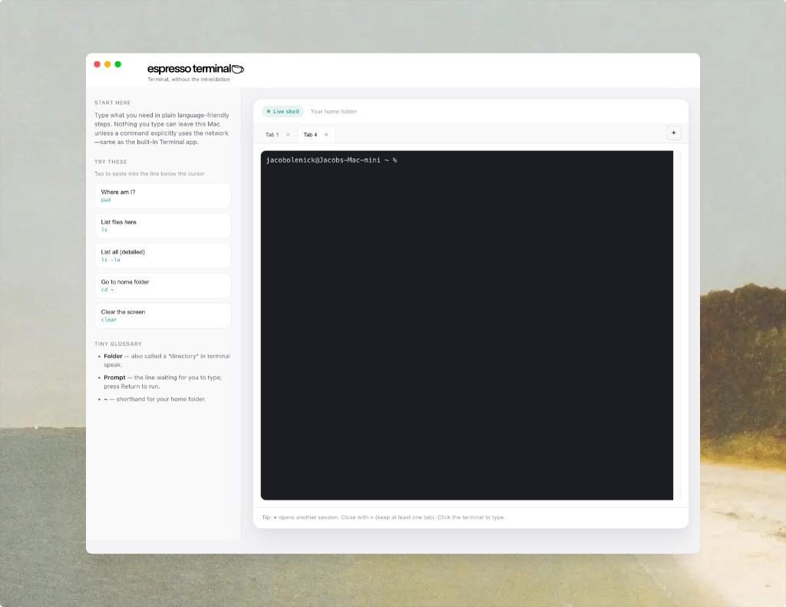
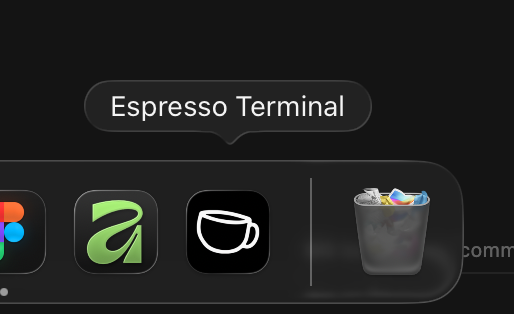

Real shell
zsh on your machine—local, fast, and familiar.
Native Mac app. Real shell, tabs, plain-language shortcuts.
Download for Mac

Details
zsh on your machine—local, fast, and familiar.
Several sessions in one window. Open, close, switch like a browser.
Plain-language actions paste the command—learn at your pace.
Native Mac app—keep it next to the tools you already use.

Light and dark appearances follow macOS. No webview cosplay.
macOS 11+ · Drag the app to Applications. This build is not Apple-notarized yet, so you may see a security notice. To open: Control-click the app → Open → Open again, or open System Settings → Privacy & Security and choose Open Anyway under the blocked-app message.